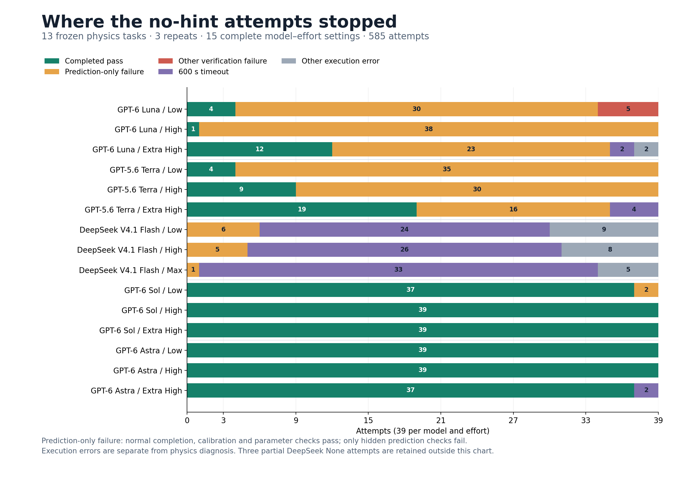
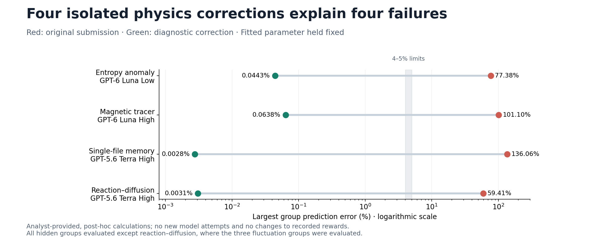

PHYS LITE BENCH · EXISTING NO-HINT SWEEP · ANALYSIS ONLY
Most completed failures get calibration right and the new physics wrong
Across the 15 complete settings, 186 of 191 normally completed failures passed calibration and parameter checks and failed only hidden predictions. DeepSeek has a different dominant problem: 105 execution errors in 117 attempts, with 101 submitted model files unchanged from their starters.
This report analyzes the existing Pareto sweep: GPT-6 Luna, GPT-5.6 Terra, GPT-6 Sol, GPT-6 Astra and DeepSeek V4.1 Flash. It is separate from the ongoing GPT-5.6 Luna / Terra / DeepSeek hint experiment. No new model calls were made, and no task, prompt, grading rule or recorded outcome was changed.
Coverage and evidenceAll 588 recorded primary attempts were indexed and their saved final-source and trajectory hashes verified against the sweep manifest. The overview uses 585 attempts from 15 complete settings; the 3 DeepSeek None attempts remain a separate partial setting. Automated extraction covers tool actions, final-code structure, calibration/parameter metrics, failed test names and exception classes. Nine illustrative trajectories below received direct source-and-action review. Four received controlled in-memory physics corrections. Internal analysis messages are not reproduced or used as evidence.
Where attempts failed

“Non-fit AST retained” is a conservative structural flag: after removing fit methods, imports and docstrings, the submitted Python syntax tree equals the starter. It is not a semantic proof, and an AST change does not imply that the physical model changed. Terra often rewrote validation or formatting while preserving the same approximation. Exact starter retention compares the complete file bytes.
What the trajectories establish
- Calibration is usually not the bottleneck. Of 191 normal-completion failures, 186 (97.4%) are prediction-only failures. The other five are all Luna Low and include an unchanged unfinished fit or replacements that already fail calibration.
- Public tests are insufficient to validate the extrapolation. A tool-observation test-pass summary is present in at least 141 of those 186 prediction-only failures. All 81 normal Terra failures have such a summary. Missing summaries are not treated as evidence that tests were skipped.
- Extra effort helps some models but is not monotonic. Terra rises from 4 to 9 to 19 completed passes out of 39; Luna has 4, 1 and 12. These are small samples on selected tasks, and High includes reused observations; this is descriptive, not a causal estimate of effort.
- DeepSeek’s 0/39 points do not isolate physics ability. Low/High/Max have 24/26/33 timeouts, plus 9/8/5 other execution errors. Only 6/5/1 attempts complete normally; all 12 fail hidden predictions after fitting calibration. The 22 non-timeout failures include reviewed rate limits, stream closures and response-output limits. The exact cause of each timeout is not inferred from its exception alone.
- Astra Extra High’s apparent drop is a time-budget effect in these records. Both of its non-completed attempts have saved checkpoints that passed verification. They remain execution failures under the original completed-pass definition.
Four physical omissions tested directly
Each calculation first reproduces the original saved hidden errors, then changes one physical ingredient in an in-memory copy while keeping the fitted parameter fixed. All tested prediction groups fall below their original limit after correction. These analyst-provided corrections diagnose the saved code; they are not additional benchmark passes.

Entropy, magnetic tracer and single-file calculations cover all hidden prediction groups. Reaction–diffusion covers its three fluctuation groups; its unchanged mean-transport solver is not rerun. Original group errors were reproduced within 5.7e-10. This supports the stated failure location, without claiming a comprehensive verification of each altered implementation.
Nine concrete solve trajectories
GPT-6 Luna / Low · entropy-anomaly · 21.6 s
Fits the friction; leaves the contact population correction at zero
GPT-6 Luna Low implemented weighted least squares and left the entire predictor unchanged. Calibration was accurate, but the conditional contact residence correction was still identically zero.
Failure location / result: Physical approximation retained. The in-memory population correction reduces the largest hidden-group error from 77.38% to 0.0443% with the fitted friction fixed.
Confirmed by a targeted diagnostic intervention
Recorded tool-action sequence and evidence
- Step 6 · 2026-10-11T19:18:02.857Z — Reads the apparatus and starter.
- Step 9 · 2026-10-11T19:18:06.973Z — Creates a friction scan.
- Step 11 · 2026-10-11T19:18:12.348Z — Implements fit(), leaving the physical predictor unchanged.
- Step 12 · 2026-10-11T19:18:13.352Z — Runs public tests: 2 passed.
model.py · model.diff · metrics.json · review.json
entropy-anomaly__6yBuZGLGPT-6 Luna / High · magnetic-tracer · 30.9 s
Gets density and mean circulation right; misses correlated detector noise
GPT-6 Luna High changed only fit(). The first tilted-generator coefficient stayed diagonal, omitting mixed longitudinal/detector diffusion. Twenty-one of 23 hidden groups were already below tolerance; anisotropic noise and the third cumulant were wrong.
Failure location / result: Physical noise-correlation omission. Noise error was 27.58% and third-cumulant error 101.10%. Restoring the mixed diffusion term gives 0.0316% and 0.0614%, respectively, with no refit.
Confirmed by a targeted diagnostic intervention
Recorded tool-action sequence and evidence
- Step 6 · 2026-10-11T08:03:01.719Z — Reads README and model.
- Step 8 · 2026-10-11T08:03:06.439Z — Connects fit() to the supplied fit_friction helper.
- Step 9 · 2026-10-11T08:03:07.275Z — Runs public tests: 2 passed.
model.py · model.diff · metrics.json · review.json
magnetic-tracer__GAWaaTfGPT-5.6 Terra / High · single-file-memory · 80.1 s
Labels the preparation correctly, but keeps the wrong covariance formula
GPT-5.6 Terra High added input checks and a docstring referring to deterministic preparation. The implemented covariance nevertheless retained the stationary-increment expression. Equal-time calibration cannot distinguish these kernels.
Failure location / result: Preparation-dependent two-time memory is missing. The parameter error is 0.00554%; unequal-time group errors are 36.60%, 77.88% and 136.06%. Changing only the covariance formula gives 0.00277% in every group.
Confirmed by a targeted diagnostic intervention
Recorded tool-action sequence and evidence
- Step 6 · 2026-10-11T13:56:30.024Z — Reads the stated preparation and starter.
- Step 8 · 2026-10-11T13:56:49.952Z — Adds validation, a weighted fit and documentation; preserves the covariance formula.
- Step 9 · 2026-10-11T13:57:12.639Z — Runs public tests and prints the fitted diffusivity.
model.py · model.diff · metrics.json · review.json
single-file-memory__PC6LumPGPT-5.6 Terra / High · reaction-diffusion · 300.5 s
Rewrites transport carefully, but preserves independent initial constituent counts
GPT-5.6 Terra High rewrote the solver and added validation. The final correlate() still multiplied the relaxation propagator by diag(totals), even though it computed the charge-conditioned susceptibility for the relaxation rate.
Failure location / result: Wrong equilibrium initial covariance. Mean transport errors remain small, but fluctuation-group errors are 42.15–59.41%. Replacing diag(totals) with the already-computed susceptibility reduces those errors to at most 0.00308%.
Confirmed by a targeted diagnostic intervention
Recorded tool-action sequence and evidence
- Step 9 · 2026-10-11T13:40:12.035Z — Checks the transport reduction numerically.
- Step 10 · 2026-10-11T13:40:21.454Z — Starts a full rewrite of model.py.
- Step 12 · 2026-10-11T13:42:22.783Z — Writes the replacement implementation.
- Step 13 · 2026-10-11T13:42:29.828Z — Runs public tests and transport checks.
- Step 15 · 2026-10-11T13:42:51.803Z — Adds the zero-time prediction branch.
- Step 16 · 2026-10-11T13:43:00.717Z — Reruns public tests and further numerical checks.
model.py · model.diff · metrics.json · review.json
reaction-diffusion__2xoVywUGPT-5.6 Terra / High · hierarchical-glass-overlaps · 235.7 s
Refines the warm fit, without changing the frozen hierarchy probabilities
GPT-5.6 Terra High added a robust width fit and extra validation, while predict() and its independent-coordinate probability calculation remained unchanged.
Failure location / result: Source inspection supports a missing correlation between parent selection and descendant weights. Parent collisions are accurate, but state/joint-group errors range from 19.79% to 48.99%. This case was not independently repaired in this analysis.
Supported by final code, metrics and the frozen task derivation
Recorded tool-action sequence and evidence
- Step 8 · 2026-10-11T13:14:19.866Z — Computes the weighted warm-regime fit.
- Step 9 · 2026-10-11T13:14:47.944Z — Implements fit().
- Step 10 · 2026-10-11T13:15:05.187Z — Runs public tests.
- Step 11 · 2026-10-11T13:15:40.382Z — Refines numerical handling of weights.
- Step 13 · 2026-10-11T13:15:55.838Z — Adds calibration-input validation.
- Step 14 · 2026-10-11T13:16:01.282Z — Runs public tests again.
model.py · model.diff · metrics.json · review.json
hierarchical-glass-overlaps__2XjntmrDeepSeek V4.1 Flash / High · ring-current-fluctuations · 108.3 s
A completed DeepSeek solution extrapolates the homogeneous branch
DeepSeek High checked several empirical fits on the low-field calibration data, then submitted the homogeneous quadratic current formula throughout the domain.
Failure location / result: Physical branch selection is missing: the submitted formula has no modulated-density branch. Calibration chi-square is 0.955 and parameter error 0.00179%, but field-10 and field-12 prediction errors are 23.07% and 42.35%.
Supported by final code, metrics and the frozen task derivation
Recorded tool-action sequence and evidence
- Step 4 · 2026-10-12T19:50:07.016Z — Reads the public apparatus and starter.
- Step 6 · 2026-10-12T19:50:25.385Z — Inspects calibration ranges.
- Step 7 · 2026-10-12T19:50:36.800Z — Groups calibration observations.
- Step 8 · 2026-10-12T19:51:05.577Z — Fits the known homogeneous quadratic feature.
- Step 9 · 2026-10-12T19:51:14.119Z — Tests a broader quadratic fit.
- Step 10 · 2026-10-12T19:51:26.908Z — Tests another polynomial feature set.
- Step 11 · 2026-10-12T19:51:30.787Z — Writes the final homogeneous predictor and runs public tests: 2 passed.
- Step 12 · 2026-10-12T19:51:38.370Z — Checks the interface and fitted parameter.
model.py · model.diff · metrics.json · review.json
ring-current-fluctuations__HHRAGEsDeepSeek V4.1 Flash / High · entropy-anomaly · 602.3 s
Explores and simulates until the deadline, without saving a model change
DeepSeek High issued analytical checks, parameter scans and long Monte Carlo simulations in temporary scripts. At the 600-second limit, saved model.py was byte-identical to the unfinished starter.
Failure location / result: Observed failure to deliver within the time budget. No physical-error conclusion is justified from this unfinished submission. The log does not establish how much of the timeout came from model latency versus tool computation.
Directly observed timeout and unchanged submitted source
Recorded tool-action sequence and evidence
- Step 4 · 2026-10-12T18:15:08.600Z — Reads README and starter.
- Step 7 · 2026-10-12T18:15:30.145Z — Scans calibration residuals.
- Step 8 · 2026-10-12T18:16:04.789Z — Checks a uniform limit.
- Step 13 · 2026-10-12T18:17:29.125Z — Runs a simulation with a four-million-step default.
- Step 14 · 2026-10-12T18:17:45.880Z — Runs another simulation with two million steps.
- Step 16 · 2026-10-12T18:18:25.251Z — Creates a longer temporary simulation script.
- Step 17 · 2026-10-12T18:18:38.323Z — Issues a sleep command while work runs.
- Step 18 · 2026-10-12T18:19:13.843Z — Polls the running computation.
- Step 22 · 2026-10-12T18:20:35.607Z — Polls another computation.
- Step 24 · 2026-10-12T18:22:20.889Z — Creates a second temporary simulation implementation before timeout.
model.py · model.diff · metrics.json · review.json
entropy-anomaly__NUsFpY4GPT-6 Luna / Low · ring-current-fluctuations · 44.1 s
Replaces the model with an expression that fails even calibration
GPT-6 Luna Low replaced the predictor with a claimed parametric formula. At zero field it returns 2 sin²(bias/4), whereas the frozen task’s homogeneous limit is bias²/4. The recorded tools contain no test run after the final replacement.
Failure location / result: Mathematical/model-form error, caught by calibration itself: reduced chi-square is 20,916 and parameter error 28.07%. This is not a hidden-only generalization failure.
Direct source discrepancy and failed calibration; no repair performed
Recorded tool-action sequence and evidence
- Step 7 · 2026-10-11T19:31:56.633Z — Reads the apparatus, source and calibration.
- Step 8 · 2026-10-11T19:31:58.924Z — Summarizes calibration by input setting.
- Step 11 · 2026-10-11T19:32:06.201Z — Deletes the starter implementation.
- Step 12 · 2026-10-11T19:32:24.882Z — Writes the replacement parametric expression.
model.py · model.diff · metrics.json · review.json
ring-current-fluctuations__q7QawzDGPT-6 Sol / Low · entropy-anomaly · 40.6 s
Successful comparison: changes the missing population equation before checking tests
GPT-6 Sol Low solved the first-order contact continuity equation and supplied the fit in the same patch. Its saved submission passed every verifier check.
Failure location / result: The successful code changes the same term isolated by the failed Luna submission’s diagnostic repair. The maximum hidden-group error is 0.0443%. This comparison is observational; the fixed-parameter repair supplies the more direct evidence.
Completed passing comparison plus agreement with diagnostic intervention
Recorded tool-action sequence and evidence
- Step 6 · 2026-10-11T20:35:01.061Z — Reads apparatus and starter.
- Step 7 · 2026-10-11T20:35:04.038Z — Reads public tests and calibration.
- Step 8 · 2026-10-11T20:35:13.727Z — Restores the conditional contact population equation and implements fit().
- Step 9 · 2026-10-11T20:35:19.850Z — Runs public tests.
- Step 10 · 2026-10-11T20:35:25.271Z — Checks the fitted parameter and additional physical settings.
model.py · model.diff · metrics.json · review.json
entropy-anomaly__9cN3AfsImplications for the ongoing hint comparison
The useful mechanism to inspect is whether a physics hint changes the relevant equation, covariance or admissible solution branch before submission. More validation alone can preserve the wrong model, as the Terra examples show. For DeepSeek, separately track completion and whether it writes a usable model before the deadline. The current paired hint protocol stays frozen; this analysis does not change its prompts, resources or schedule.
Limits and reproducibility
- Three attempts per task/setting; tasks were selected during development against GPT-5.6 Luna. These counts are not population accuracy estimates.
- 120 High observations were reused from the earlier comparison. Four reused Terra High trials had documented host-sleep timing effects. Timing figures in individual cases are observed wall time, not pure reasoning time.
- Root-cause attribution is limited to the reviewed cases. Automated “prediction-only failure” does not itself distinguish physics, mathematical and numerical mistakes.
- Case selection is explanatory and post-hoc; cases are not a random sample. Recorded exceptions and all unsuccessful attempts remain in the denominators.
- The partial DeepSeek None setting has 2 normal prediction failures and 1 timeout. The 36 unrun attempts are not treated as failures.
- The first diagnostic-script run stopped on an assertion because the same reaction covariance expression appeared in both a public method and a compatibility helper. The corrected script accounts for both occurrences; no submission or outcome was altered.
All 588 attempt records and extracted action metadata · Diagnostic calculations · Case review index · Overview PDF · Diagnostic PDF
Source: results/reasoning-sweep-20261011/results.json · SHA-256 cd5d867e98f5b3f91a61739f43dad5e37107b75ab448866ee01471bacdb274ab
Analysis generated 2026-10-15T01:50:53.701462+00:00. Original private reference notes and verifier data remain the physical baseline for this local audit.